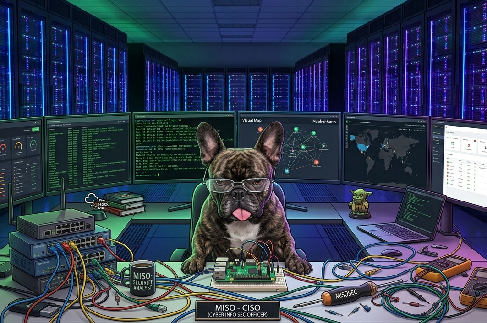

CYBER-seCURIOSITY
CYBER-seCURIOSITY

Home Networking Labs and proving the OSI model isn't tech-fluff
Over the past year, I’ve moved beyond just reading and listening to cybersecurity content, I’ve been building, breaking, and learning by doing. My journey started with simple questions about how routers work, but quickly escalated into building home lab setups, experimenting with traffic, routing, and segmentation to make abstract concepts real.
One breakthrough was using my laptop as a software router, manually adding routes and watching traffic flow between subnets. That “aha” moment when a ping finally works after setting up the right route made the OSI model click for me. Now, a failed ping isn’t just a dead end: “network unreachable” means a Layer 3 issue, “host not found” is a name resolution problem, and a silent ping points to firewalls or filtering. The OSI model became a map for troubleshooting, making the process logical instead of random.
Applying this at home, I started segmenting my network—isolating smart devices like TVs and robo-vacs I don’t fully trust. Subnets and firewall rules gave me real control over what talks to what, making even a basic home setup feel like a “real” network.
Packet analysis became a regular activity. Using CLI tools and Wireshark, I learned to spot ARP broadcasts, open ports, and ICMP messages. Watching ARP requests in real time connected the dots between IP addresses and hardware, and seeing ICMP errors after a failed ping tied the layers together. Over time, I developed a sense for what “normal” traffic looks like, making it easier to spot anomalies.
On the security side, I explored web application firewalls, rate limiting, and HTTP headers, sometimes breaking things, sometimes learning from false positives. Each mistake forced me to dig deeper and understand what was really happening, not just what I assumed.
All of this ties back to foundational knowledge for certifications, especially around protocols like TLS and where encryption fits in the stack. It’s one thing to memorize the layers, but another to see how data moves, gets encrypted, and is broken into packets for transmission.
This journey has been about building intuition, not just memorizing acronyms. There have been plenty of wrong turns and misconfigurations, but each one brought me closer to understanding how systems behave in the real world. Curiosity and persistence have been my best tools, albeit, sometimes in short supply.